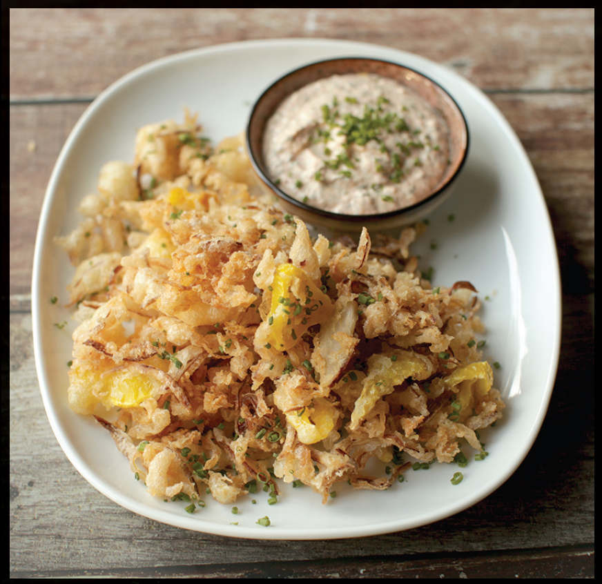

TEMPURA SAUERKRAUT AND ONIONS
|
Yield Serves 3 to 4 Active Time 15 minutes Total Time 15 minutes |
Replace half of the sauerkraut with finely shredded cabbage kimchi for a spicier variation |
INGREDIENTS
2 quarts (2 l) peanut, rice bran, or other neutral oil
12 ounces (340 g) sauerkraut
2 ounces (60 g) red or yellow onion, thinly sliced
1 ounce (30 g) homemade or store-bought pickled chiles (here), thinly sliced
1 cup All-Purpose Tempura Batter and Dredging Mixture (here)
¼ cup (60 ml) 80-proof vodka
⅔ cup (160 ml) ice-cold soda water
To Serve:
Gochugaru Yogurt Ranch Dressing (here)
This recipe is something that came in a flash of inspiration in October of 2019. I was working on a new formula for the fried chicken sandwich at Wursthall with my sous-chef Erik Drobey and experimenting with various homemade and commercial tempura mixes. One of the cooks, Carlos Gonzalez, was stocking the line with sauerkraut for the night. On a whim, I grabbed a handful and dropped it into a bowl of tempura batter along with some slivered red onions (that I pulled out of our burger station) and some of the pickled Fresno chiles we serve with our queso pretzel dip. I mixed them all up, then drizzled them into the fryer.
I was floored by how delicious the concoction was. The sauerkraut acquired the nutty aroma of roasted cabbage, while onion added some sweetness, tempered by a bit of heat from the Fresnos. Tempura is light to begin with, but the acidity from the sauerkraut and chiles made it even brighter. It was delicious enough that we put it on the menu a week later, serving it with a Gochugaru Yogurt Ranch Dressing (here). The changes we had to make for operations when the coronavirus hit forced us to pull it off the menu a few months later, but I am confident that my relationship with tempura sauerkraut is far from over.

DIRECTIONS
1 Heat the oil to 375°F (190°C) in a wok over high heat, then adjust the heat as necessary to maintain the temperature. Line a large plate or baking sheet with a double layer of paper towels.
2 Place sauerkraut in a fine-mesh strainer set over the sink and squeeze as much moisture out of it as you can. Add the onions and chiles and toss everything until well mixed.
3 Add the batter mix to a large bowl. Add the vodka and soda water and, holding the bowl with one hand and chopsticks in the other, shake the bowl back and forth while vigorously stirring with chopsticks until the liquid and dry ingredients are just barely combined. There should still be many bubbles and pockets of dry flour.
4 Add the sauerkraut/onion/chile mixture and toss to coat. Pick up a small handful in loose fingertips, let the excess batter drip back into the bowl, then slowly sprinkle the mixture into the oil. Continue adding until all the mixture is in the oil. Increase the heat to high to maintain the temperature as close to 350°F (175°C) as possible. Immediately start agitating with chopsticks or a spider, breaking up the largest clumps but allowing the mixture to stay tangled. Continue frying until the batter is completely crisp and pale blond, about 1 minute total.
5 Transfer the tempura to a paper-towel-lined plate or baking sheet and immediately sprinkle with salt. Serve with Gochugaru Yogurt Ranch Dressing.